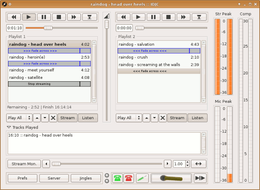

Internet DJ Console
Hinweis:
Diese Anwendung ist für den Soundserver JACK konzipiert und setzt eine solide Systemkonfiguration und die in Tonstudio/Konfiguration beschriebenen Einstellungen voraus.
Dieser Artikel wurde für die folgenden Ubuntu-Versionen getestet:
Ubuntu 16.04 Xenial Xerus
Ubuntu 14.04 Trusty Tahr
Zum Verständnis dieses Artikels sind folgende Seiten hilfreich:
| Internet DJ Console | ||
Internet DJ Console 
 | ||
| Anwendungsbereich:: | Internetradio | |
| Sprache: |   | |
| Autor: | Stephen Fairchild | |
| Erste Veröffentlichung: | März 2005 | |
| Lizenz: | GPL | |
| Oberfläche: | GTK+ | |
| Programmiersprache: | C, Python | |
| Voraussetzungen: | JACK | |
| Installation: | Paketquellen, kompilieren | |
Die Internet DJ Console , kurz IDJC, ist ein vielseitiger Source-Client für anspruchsvolle Macher/innen von Internet-Radio-Stationen, die auf Icecast oder Icecast2 aufsetzen. Auch SHOUTcast-Server werden in der aktuellen Version unterstützt. Den Moderatoren oder DJs stehen zwei Audioplayer, das Mikrofon und jeder beliebige JACK-Client als AUX-Anschluss zum Senden zur Verfügung.
Die Monitorfunktion unterstützt den DJ in einem stressfreien Betrieb ebenso wie das dynamische Metadatenupdate mit Anbindung an X-Chat. Durch ausgefeilte Mikrofon- und Streaming-Einstellungen werden qualitativ hochwertige Live-Sendungen möglich.
Die Internet DJ Console kann natürlich auch in jeder Umgebung, die den Soundserver JACK unterstützt, als gewöhnlicher Audioplayer oder -recorder gebraucht werden.
Installation¶
Folgendes Paket muss installiert [1] werden:
idjc (multiverse)
 mit apturl
mit apturl
Paketliste zum Kopieren:
sudo apt-get install idjc
sudo aptitude install idjc
Benutzung¶
Der Start der Internet DJ Console kann über idjc erfolgen [2]. Für den Anfänger ist der Start im Terminal von Vorteil, um Fehlermeldungen sofort zu entdecken [3].
Wurde der Soundserver JACK noch nicht manuell gestartet [4], wird dies von der Internet DJ Console vorgenommen. Beim Programmstart kann der Nutzer ein Profil wählen oder ein neues Profil erstellen, mit dem die Internet DJ Console gestartet wird.
Allgemeine Hinweise¶
Unterhalb der Abspiellisten stehen Schaltflächen zur Verfügung, um die jeweilige Abspielliste für den Stream und/oder den DJ hörbar zu machen. Ebenso lassen sich die JACK-Anschlüsse für Mikrofon und AUX über die jeweiligen Schaltflächen aktivieren.
Abspiellisten Verwaltung¶
Die Verwaltung der Abspiellisten erfolgt über das Kontextmenü der rechten Maustaste  . Neben den üblichen Funktionen einer Abspielliste bietet die Internet DJ Console die Möglichkeit, Steuerelemente, wie zum Beispiel den Übergang oder den sofortigen Wechsel zur anderen Abspielliste, in die Liste selbst einzufügen.
. Neben den üblichen Funktionen einer Abspielliste bietet die Internet DJ Console die Möglichkeit, Steuerelemente, wie zum Beispiel den Übergang oder den sofortigen Wechsel zur anderen Abspielliste, in die Liste selbst einzufügen.
Neben Audiodateien können auch Abspiellisten im m3u-Format eingefügt werden.
Stream-Monitor¶
Mit eingeschaltetem Stream-Monitor kann zwischen den Abspiellisten hin- und hergeschaltet werden oder, was wesentlich eleganter ist, über einen einstellbaren Zeitraum weniger Sekunden von der einen Abspielliste in die andere überblendet werden, auch "crossfading" genannt.
VoIP¶
Bisher gibt es keine Programme zur Internet-Telefonie mit JACK-Schnittstelle. Daher muss die Datei ~/.asoundrc (oder die Datei /etc/asound.conf, aber dann mit Root-Rechten) zu folgender Einstellung geändert werden, um VoIP-Programme dennoch in JACK und damit in der IDJC einbinden zu können:
pcm.idjcvoip {
type plug
slave { pcm "idjcjack" }
}
pcm.idjcjack {
type jack
playback_ports {
0 idjc-mx:voip_recv_lt
1 idjc-mx:voip_recv_rt
}
capture_ports {
0 idjc-mx:voip_send_lt
1 idjc-mx:voip_send_rt
}
}Näheres dazu liest man unter Jackplug. Soll der damit geschaffene Voice-over-IP-Anschluss für JACK benutzt werden, kann man ihn mit QjackCtl verwalten, wobei JACK vor dem Start von IDJC und dem Internet-Telefonie-Programm gestartet werden muss. Mit dem roten und grünen Telefonbutton rechts unten auf der IDJC kann dann das VoIP-Programm eingebunden werden.
Mehr zum Thema VoIP in IDJC liest man auf der IDJC-Seite .
Einstellungen¶
Die kleinen Einstellungsfenster sind leider nicht in der Größe veränderbar, daher muss die Laufleiste am rechten Fensterrand genutzt werden, bei einigen Einstellungen muss man auch quer scrollen.
Grundeinstellungen¶
In den Grundeinstellungen lässt sich das Aussehen und Verhalten des Hauptfensters beeinflussen. Zusätzlich kann hier eine automatische Aufnahmepause definiert werden und der Stream Normalizer aktiviert und eingestellt werden, um einen Stream in gleichbleibender Lautstärke zu erhalten.
Mikrofon¶
Die gemeinsame Wirkung von Kompressor und Noisegate lässt sich gut am Beispiel nächtlichen Fernsehens erklären: Während man in Szenen, in denen leise gesprochen wird, die Lautstärke erhöht, schraubt man sie in Action-Szenen wieder runter, damit der Nachbar nicht aus dem Bett fällt. Dieses Anpassen der Lautstärke wird hier in etwa automatisiert.
X-Chat¶
Über die X-Chat-Anbindung kann die Stream-Info (Metadaten) in Chaträume geschrieben werden. Hierzu stehen zwei Methoden, eine an den abgespielten Titel, die zweite an einen Zeitintervall gekoppelt, zur Verfügung. Beide Möglichkeiten können gleichzeitig genutzt werden.
JACK-Anschlüsse¶
An dieser Stelle bringt die Internet DJ Console eine eigene Verwaltung ihrer JACK-Anschlüsse mit, die sie auch selbstständig voreinstellt. Es ist aber auch möglich, zuerst Qjackctl und erst dann IDJC zu öffnen.
Mikrofon¶
Das Mikrofon (i.d.R. "alsa_pcm:capture_2") wird automatisch mit dem rechten Ausgangs-Kanal der Soundkarte und dem rechten Kanal des Streams gekoppelt. Um das Mono-Mikrofon im Stream als Stereo-Signal umzusetzen, reicht die Verbindung des einen Mono-Mikrofon-Kanals mit beiden Mikrofon-Ausgabe-Kanälen der Internet DJ Console. Hört sich kompliziert an, ist es aber nicht!
Zwei Soundkarten¶
Falls man IDJC mit zwei Soundkarten verwenden möchte, kann man hier bei den JACK-Anschlüssen z.B. Str L/R auf eine Soundkarte (Stream Output) und Aud L/R auf eine andere (Kopfhörer) umleiten lassen.
Das könnte dann z.B. so aussehen:
Aud L alsa_out:playback_1 Aud R alsa_out:playback_2 Str L system:playback_1 Str R system:playback_2
Dazu muss allerdings nach dem Starten von Qjackctl noch alsa_out aufgerufen werden. Hier für die 2. Karte (z.B. ein USB-Kopfhörer):
alsa_out -d hw:1 -q 0 &
Dies kann man von Qjackctl automatisch ausführen lassen, wenn man obige Zeile in den Einstellungen bei Optionen/Script nach Start ausführen kopiert.
Server¶
Verbindung¶
Die Internet DJ Console kann Verbindungen zu Icecast-, Icecast2 und SHOUTcast-Servern aufnehmen. Für Icecast2 Server sind der Mountpoint /stream und der Benutzer source als Standards üblich. Das Passwort wird nur gespeichert, wenn dies in den Grundeinstellungen aktiviert wird.
Format¶
Der Stream kann von der Internet DJ Console als MP3-Stream in konstanter Bitrate (CBR) oder als ogg-Stream, wahlweise in konstanter oder begrenzt variabler (mittlerer) Bitrate (ABR) an den Server übermittelt werden.
Stream-Info¶
Stream-Informationen sind Metadaten, die zum Beispiel auf der Weboberfläche von Icecast2-Servern angezeigt werden oder in den Yellow Pages veröffentlicht werden. Diese Informationen nutzen die Audioplayer der Zuhörer, um Informationen zur Station, Sendung sowie laufendem Titel und Interpreten anzuzeigen.
Jingles¶
Jingles sind kurze Einspielungen, die der Unverwechselbarkeit einer Radiostation, einer einzelnen Sendung oder des Moderators dienen können. Die Jingles können aus den Abspiellisten in die Jingle-Liste übertragen werden, um sie unabhängig von den eigentlichen Abspiellisten bereit zu stellen.
Problembehebung¶
Ruckelnder, abgehackter Ton¶
Wenn der Ton während der Wiedergabe ruckelt, stottert und hackt, obwohl beim letzten Broadcast keinerlei Probleme dieser Art auftraten, empfiehlt es sich, aufgrund der vielen ineinandergreifenden Audio-Layer (ALSA, JACK, PulseAudio), die sich gegenseitig behindern können, während der jeweiligen Session ausschließlich JACK-basierende Anwendungen einzusetzen. Das betrifft speziell Benutzer mit regulärem, d.h. nicht-Echtzeit-optimiertem, Kernel.
Proprietäre Audio-Codecs¶
Möchte man die Unterstützung bestimmter Audio-Formate im Programm de- oder aktivieren oder eine neuere Version als die der Paketquellen benutzen, muss man das Programm selbst kompilieren. Anweisungen hierzu finden sich im Artikel Internet DJ Console/Kompilieren.
Sendebetrieb¶
Für den regelmässigen Sendebetrieb kann es von Vorteil sein, die Distribution Ubuntu Studio in eine gesonderte Partition zu installieren. Diese Distribution bringt alle Erfordernisse und Einstellungen für einen störungsfreien Sendebetrieb mit.
 Übersichtsartikel
Übersichtsartikel- Erstellt mit Inyoka
-
 2004 – 2017 ubuntuusers.de • Einige Rechte vorbehalten
2004 – 2017 ubuntuusers.de • Einige Rechte vorbehalten
Lizenz • Kontakt • Datenschutz • Impressum • Serverstatus -
Serverhousing gespendet von